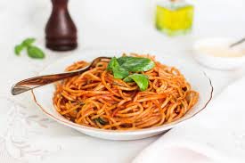

Pasta

Low glycemic index diets have been shown to improve
glucose tolerance in healthy and diabetic people.
However, it is necessary to diversify the diet with
foods with low glycemic response. In this study, three
partially substituted pasta made with semolina and flour
legumes (12% Phaseolus vulgaris, Vigna sinensis 10%,
12% of Cajanus cajan) were formulated and its cooking
quality, acceptability, glycemic index and glycemic
load were assessed. We found that the incorporation
of legumes impacts the cooking quality and sensory
characteristics of the product, increasing cooking
losses between 78% and 557%, and the content of
soluble proteins between 14% and 32%. In relation
to the sensory characteristics, increases in hardness
and stickiness were observed, without altering the
overall appreciation (9 on a scale of 0 to 10).
An Improvement of on the nutritional quality was
observed, increasing the protein content between
19% and 26%. The glycemic index value found for
the three pasta formulations resemble the type of
slow and intermediate carbohydrate absorption.
Dietas con índices glicémicos bajos han
demostrado mejorar la tolerancia a la glucosa en
personas sanas y diabéticas. Sin embargo, es
necesario diversificar los alimentos con bajas
respuestas glicémicas. En este estudio se formularon
tres pastas de sémola parcialmente sustituidas con
harina de leguminosas (12% Phaseolus vulgaris, 10%
de Vigna sinensis, 12% de Cajanus cajan) y evaluaron
la calidad de cocción, aceptabilidad, índice glicémico
y carga glicémica de las mismas.